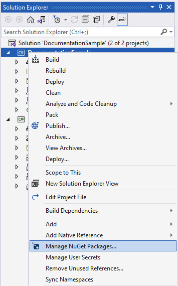

Getting Started with the .NET Multi-platform App UI (.NET MAUI) Community Toolkit
This article covers how to get started using the packages provided as part of the .NET MAUI Community Toolkit project.
Adding the NuGet package(s)
The toolkit is available as a set of NuGet packages that can be added to any existing or new project using Visual Studio.
Open an existing project, or create a new project as per the .NET MAUI setup documentation
In the Solution Explorer panel, right click on your project name and select Manage NuGet Packages. Search for CommunityToolkit.Maui, and choose the desired NuGet Package from the list.

Choose the toolkit(s) that are most appropriate for your needs from the options below:
This package is a collection of Animations, Behaviors, Converters, and Custom Views for development with .NET MAUI. It simplifies and demonstrates common developer tasks building iOS, Android, macOS and Windows apps with .NET MAUI.
Package name: CommunityToolkit.Maui
Package url: https://www.nuget.org/packages/CommunityToolkit.Maui
Initializing the package
First the using statement needs to be added to the top of your MauiProgram.cs file
using CommunityToolkit.Maui;
In order to use the toolkit correctly the UseMauiCommunityToolkit method must be called on the MauiAppBuilder class when bootstrapping an application the MauiProgram.cs file. The following example shows how to perform this.
var builder = MauiApp.CreateBuilder();
builder
.UseMauiApp<App>()
.UseMauiCommunityToolkit()
To use the features of the toolkit please refer to the documentation pages for each specific feature.
Using the NuGet package(s)
- Enable Toolkit in
MauiProgram.cs:
var builder = MauiApp.CreateBuilder();
builder.UseMauiApp<App>();
builder.UseMauiCommunityToolkit();
4.1. For advanced settings set CommunityToolkit.Maui.Options:
builder.UseMauiCommunityToolkit(options =>
{
options.SetShouldSuppressExceptionsInConverters(false);
options.SetShouldSuppressExceptionsInBehaviors(false);
options.SetShouldSuppressExceptionsInAnimations(false);
});
- Check out the rest of the documentation to learn more about implementing specific features.
Other resources
The .NET MAUI Community Toolkit GitHub Repository contains the source code for a sample application that is designed to show how you can use the toolkit to build a .NET MAUI application. Please note that you will be required to clone or download the repository and compile the source code in order to run the sample application.
We recommend developers who are new to .NET MAUI to visit the .NET MAUI documentation.
Visit the .NET MAUI Community Toolkit GitHub Repository to see the current source code, what is coming next, and clone the repository. Community contributions are welcome!